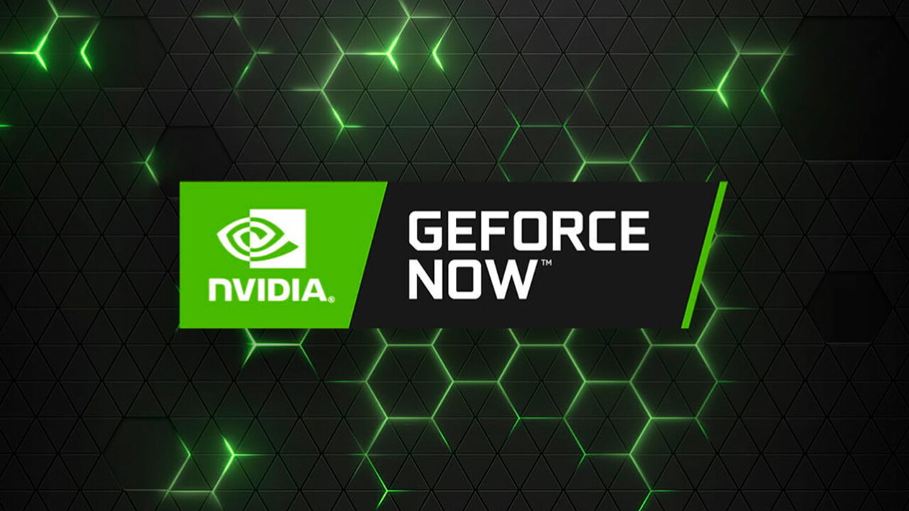

Le principe du Cloud Gaming à la base, c'est de simplement jouer aux jeux vidéos mais sans console. Concrètement, il nous faut juste un ordinateur et une connexion internet pour pouvoir accéder et jouer à tous nos jeux. Bon après dans les faits, il faut une connexion internet plus que performante et stable pour pouvoir avoir une expérience sans ralentissements et fluide de A à Z. Le second avantage de cette technologie c'est quelle permet de réduire considérablement voir de supprimer les chargements, mises à jour et tout ce qui a pu ruiner notre expérience en tant que joueurs jusqu'à lors. Le principe reste tous de même intéressant car c'est quelque chose dont on a rêvé pendant longtemps et qui est maintenant en place, malgré les fragilités (forte consommation de données jusqu'à 20 Go/h,...) que cette nouvelle façon de jouer aux jeux vidéos possède encore.
Le Cloud Gaming, à la différence des consoles traditionnelles, n'a pas besoin d'une unité externe qui traite tous les calculs et le stockage. Toute la technologie repose sur la centralisation des calculs dans des serveurs situés dans le monde entier, ainsi le seul outil réellement nécessaire se trouve être encore et toujours cette connexion internet.Plus de précisons sur cette page ikipedia.
Il existe différents services de Cloud Gaming dans le monde. De Google à Sony en passant par Amazon, tout le monde essaye de proposer sa propre plateforme. Nvidia, le célèbre fabricant de cartes graphiques, a été le premier à le mettre en place avec le NVIDIA GRID créé en 2013 rebaptisé GeForce Now en 2015 qui fonctionne sous abonnement.
Mais évidemment l'idée s'est diffusée comme l'odeur de vin chaud en plein marché de Noël et on retrouve maintenant une nuée de services de Cloud Gaming : Microsoft s'y est également mis avec son XCloud qui reste sur le même principe, la Stadia avec Google disponible depuis Novembre 2019, le(/la?) futur(e) Luna avec Amazon annoncée depuis le 24 Septembre dernier, même Playstation, leader des consoles de salon, propose le Playstation Now qui permet de jouer à un catalogue d'environ 700 jeux PS2,PS3 et PS4. On remarque que tous utilisent des abonnements afin de fidéliser leurs clients car quand on arrête l'abonnement, on a plus accès à rien.